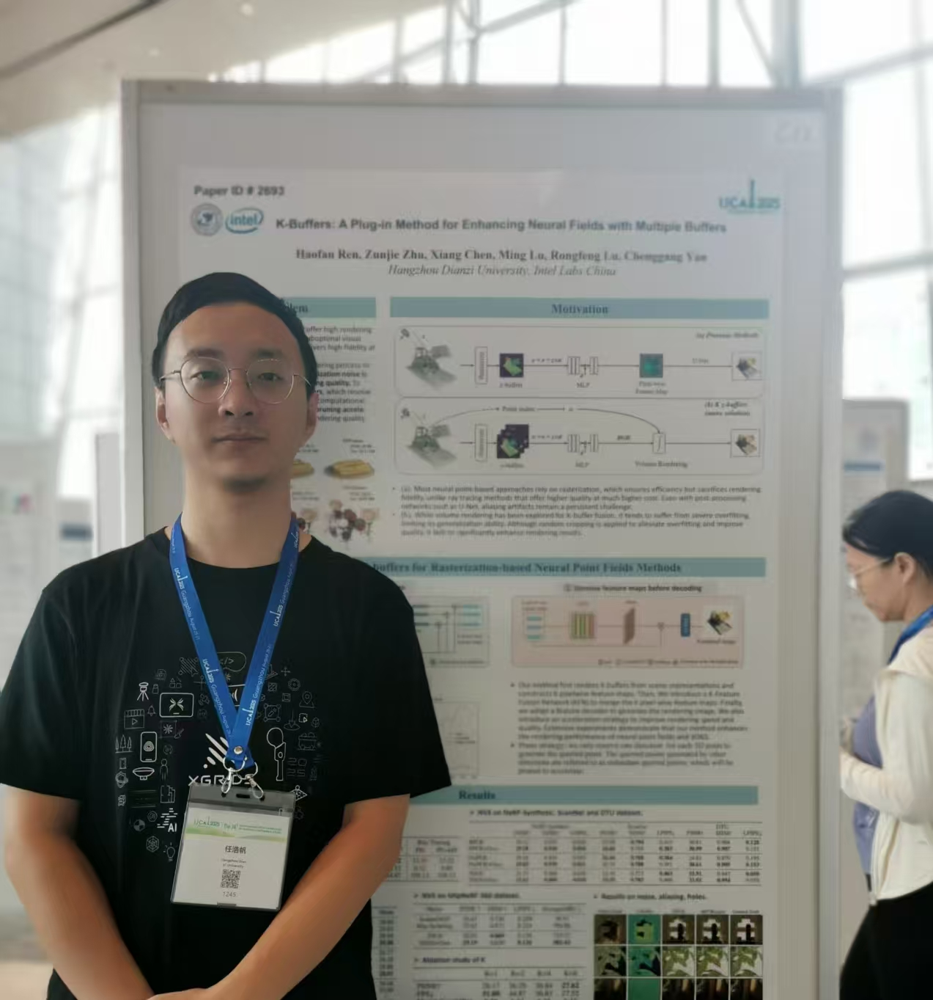
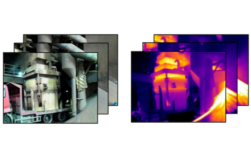
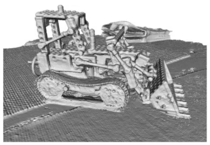
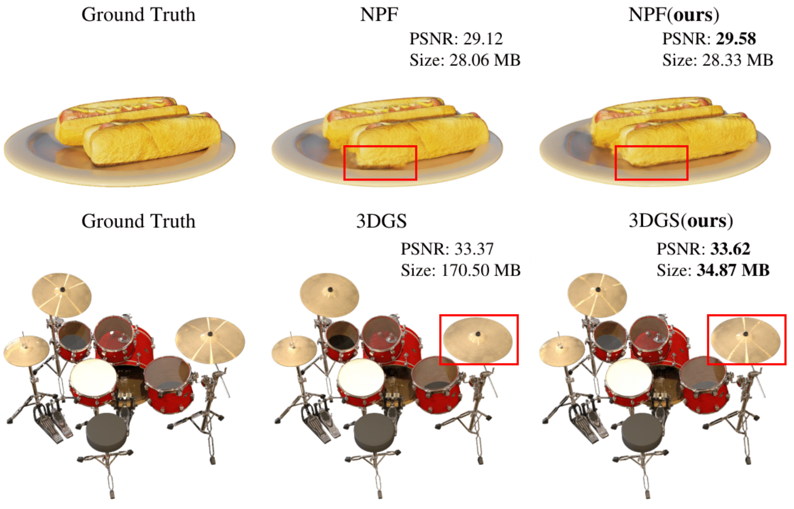
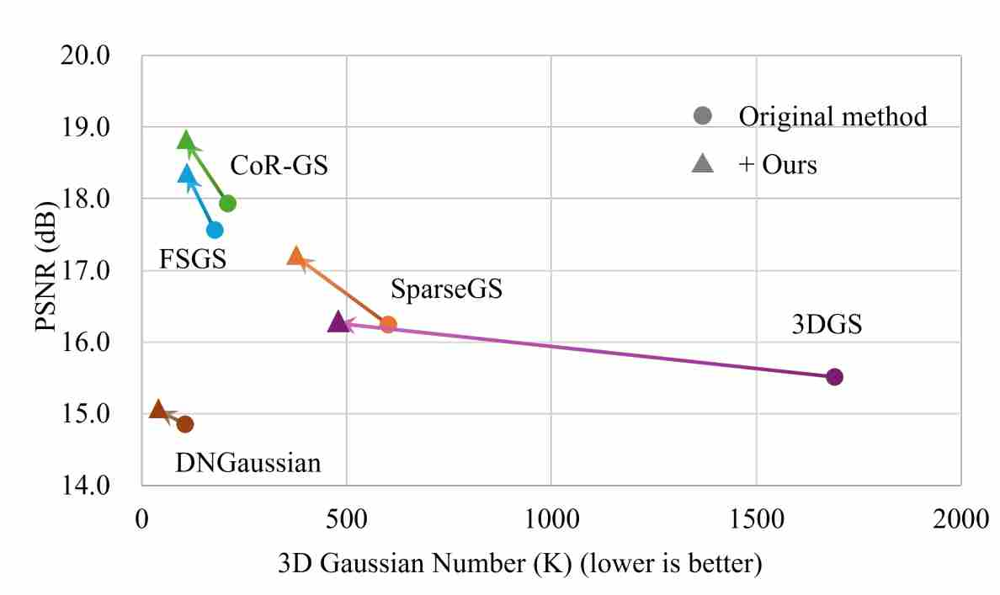

Haofan Ren(任浩帆)Building spatial intelligence with 3D reconstruction3D Reconstruction Engineer at XGRIDS [Github] [X (Twitter)] |
 |
I am an engineer at XGRIDS, mainly responsible for 3D reconstruction. Before that, I received my bachelor's and master's degrees from IIPL Lab of Hangzhou Dianzi University, supervised by Prof. Chenggang Yan from HDU and Ming Lu from Intel Labs China.
我目前在 XGRIDS 担任工程师，主要负责三维重建。 此前，我在杭州电子科技大学 IIPL 实验室获得学士和硕士学位，师从杭电颜成钢教授和英特尔中国研究院陆鸣老师。
CoMVS-GS: Collaborative Multi-View Stereo and 3D Gaussian Splatting for Surface Reconstruction Shihan Chen, Junjing Zhang, Qingsong Yan, Haibing Liu, Haofan Ren, Fei Deng arXiv 2026 [Paper]

ThermalGaussian++: Improving Alignment and Resolution for Thermal 3D Gaussian Splatting Rongfeng Lu, Chi Zhu, Quan Chen, Le Zhang, Ming Lu, Tingyu Wang, Haofan Ren, Yitian Xue, Yunfei Guo and Chenggang Yan TPAMI 2026 [Paper]



VGNC: Reducing the Overfitting of Sparse-view 3DGS via Validation-guided Gaussian Number Control Lifeng Lin, Rongfeng Lu, Quan Chen, Haofan Ren, Ming Lu, Yaoqi Sun, Chenggang Yan, Anke Xue ACM MM 2025 [Paper]